01In a hurry to get started?
- Open Backee from the tray, next to the clock. Click its icon. If you cannot see it, look under the ^ arrow with the other hidden tray icons.
- On the Home page, click ＋ New backup.
- On the first step, What, click ＋ Add folder… and pick the folders you want to keep safe. Then click Next.
- On the second step, Where, choose This PC or USB drive, click Browse… and pick a folder on a different drive from your files. Then click Next.
- Click Next on When, accept everything on Options, and click Create and run now. Windows asks once for permission to make the change. Choose Yes.
That is all. Your first backup starts at once. To see that it worked, look at the new tile on the Home page. It shows a percentage while it runs, and a green OK when it is finished.
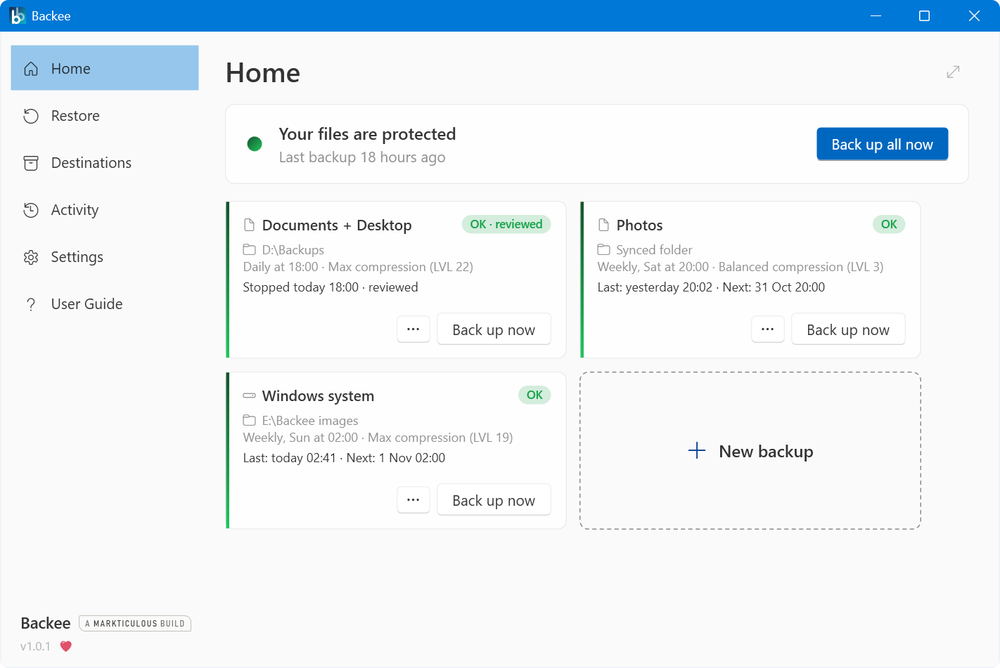
02Backee at a glance
Backee has two parts. The Backee service does the real work. It runs in the background, starts with Windows, and makes your backups on schedule. The Backee app is the window and the tray icon you use to look at them. You can close the window and even the tray icon. The service keeps running, so your backups still happen.
The main window has a list on the left:
- Home
- How your backups are doing, with one tile for each backup.
- Restore
- Get files back from a backup (see Getting files back).
- Destinations
- The places your backups go. Each place is listed once, with what kind it is (this PC or a USB drive, a synced folder, or S3-compatible storage) and the backups that use it. If a backup is waiting, for example because its USB drive is not plugged in, the reason shows here too.
- Activity
- A list of every backup that has run (see Activity).
- Settings
- Opens the Settings window (see Settings).
- User Guide
- Opens this guide in your web browser.
The banner on the Home page
The banner at the top is one line about all your backups. A coloured dot shows the mood. The words are one of these:
- Your files are protected. Everything is fine. It also says when the last backup finished.
- No backups set up yet or Not backed up yet. You have no backup, or none has run.
- Your backups need attention. A backup is waiting, finished with warnings or was stopped.
- A backup failed. Open Activity to see why.
- Backups are paused. You paused them from the tray menu.
- Backee cannot reach its service. The service is not running (see If something goes wrong).
- Backee is starting with Windows, with a grey dot. Backee has just started with Windows and its service is still coming up, which can take a minute or two. Your backups appear in a moment; nothing needs doing.
The Back up all now button on the banner starts every backup that is not already running. It asks first (Back up all now?), then the backups run in the background. It is greyed out until you have a backup.
The tiles
Each backup has a tile. It shows the name, the folder the backups go to, the schedule and compression (for example Monthly on day 1 at 21:00 · Max compression (LVL 19)), and a line about the last run. A weekly schedule on Monday to Friday reads Weekdays, on Saturday and Sunday Weekends, and on every day Every day; four to six other days read, for example, 4 days a week, and pointing at the line shows the days. The level number is always shown, as in Balanced compression (LVL 3); only No compression has none. A coloured stripe on the left and a small label at the top right tell you the state:
| Label | Meaning |
|---|---|
| OK | The last backup worked. Green. |
| Running or a percentage | A backup is running now. A bar shows how far it has got. |
| New | The backup has never run. Grey. |
| Waiting | It cannot start yet, for example because the backup drive is unplugged or the battery is low. The tile says why. Amber. Click the label to open the details in Activity. |
| Warnings | It finished, but some files were skipped. Amber. Click the label to open the details in Activity. |
| Reviewed | The last run had warnings and you marked it as reviewed (see Activity). Green. |
| Stopped | It was stopped before it finished. Amber. |
| Failed | It did not work. The tile says why. Red. |
The button at the bottom right of every tile is Back up now, or Stop while that backup runs. It asks first (for example Back up Documents now?) and then runs in the background. After you confirm Stop, the tile says Stopping with moving dots, Stop is greyed out, and the tray and Activity say so too, until the backup has really ended; that can take a moment. The tiles are wide, three across at most. The ⋯ button next to it opens a menu. Items that have nothing to act on are greyed out:
- Back up now. Greyed out while the backup runs.
- Show details. Opens Activity with this backup chosen. Greyed out until it has run.
- Restore files…. Opens Restore with this backup chosen. Greyed out until a run has stored a version.
- Open backup folder. Opens the folder the backups go to in File Explorer. Greyed out for cloud storage, and when the folder cannot be found, for example because the USB drive is unplugged.
- Mark as reviewed. Available when the last run ended with warnings or was stopped (see Activity).
- Download cloud files to this PC… and It's ok, don't tell me again. With Mark as reviewed, they have their own section of the menu, headed by the tile's label (for example Warnings). Available when the last run left out files that are only in OneDrive (see Files that are only in OneDrive). Greyed out otherwise.
- Edit… and Delete….
While an image of a backup is open as a virtual disk, its tile shows a pill such as Mounted as G:. Hover over it to see the file behind the disk (see Disk and partition images).
The dashed ＋ New backup tile at the end starts a new backup.
03The tray icon
The Backee icon sits in the tray, next to the clock. Left-click it to open the main window. Right-click it to open its menu.
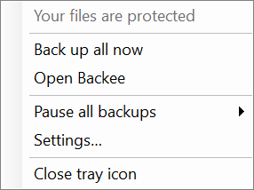
- The first line
- A short status, such as Your files are protected or Backing up Documents. It is only a label. You cannot click it.
- Back up all now
- Starts every backup that is not already running.
- Open Backee
- Opens the main window.
- Pause all backups
- Opens a small list: For 1 hour, Until tomorrow or Until I resume. Pausing needs an administrator, so Windows asks once for permission.
- Resume backups
- Replaces Pause all backups while backups are paused.
- Settings…
- Opens the Settings window.
- ♥ Support Markticulous…
- Appears only after Backee has been useful for a while (see Support Markticulous).
- Close tray icon
- Closes the icon and the window. Backee asks first. The service keeps running, so your backups still run as scheduled. Start Backee again whenever you want to look at them.
What the colours mean
The icon is a tile that changes colour with the state of your backups. Hover over it to see a short sentence.
| Icon | Meaning |
|---|---|
| Dark blue and cyan, steady | Idle. Your files are protected, or there are no backups yet. |
| Lime green, pulsing | A backup is running. |
| Amber, pulsing | Something needs attention: a backup is waiting, finished with warnings or was stopped. Also shown when the service is not running. |
| Red, pulsing | A backup failed. |
| Grey, blinking | Backups are paused. |
Amber and red alerts stop pulsing once you have seen them, that is, once you open the menu or the window. They pulse again if something new goes wrong. Green and grey keep moving for as long as they last. If you turned off animation effects in Windows, every state shows as a steady colour instead.
04Making a backup
Click ＋ New backup on the Home page. A window with four steps opens: What, Where, When and Options. Use Next and Back to move between them. Every step already has a sensible choice. If something is missing, a red line at the bottom says what. If you cancel after changing things, Backee asks before it throws your choices away.
Every backup stores only what changed, yet each one restores in full on its own.
Other backup apps make you choose between full, incremental and differential backups. Backee does not need to. Each run adds only new or changed data, like an incremental backup, but every version is complete, like a full backup. No version depends on a chain of earlier ones, so removing an old version never breaks a newer one.
Step 1: What
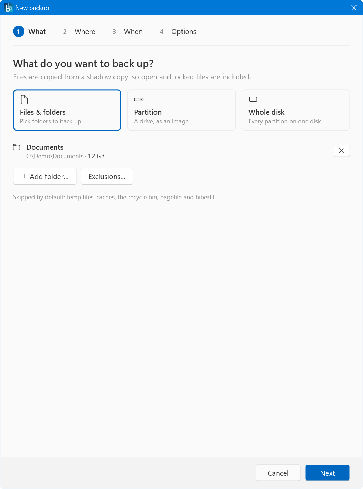
Click ＋ Add folder… and choose one or more folders. Each shows its size once Backee has measured it. The ✕ beside a folder removes it. Backee copies files from a shadow copy, so files that are open or locked are included (see Keeping your backups safe).
Click Exclusions… to skip some files. A checklist of common kinds of files appears: videos, music, disk images, archives, installers, developer folders, game libraries, unfinished downloads and system clutter. Tick the ones you do not need. Each row says how many files it covers and how much space they take in the folders you chose, so you can see what ticking it saves. Backee counts in the background and updates the numbers when you add or remove a folder. A file can match more than one row, so do not add the numbers together. Below the checklist, type your own names or patterns, one per line, such as *.psd or Old projects. To skip one particular folder, click Add folder to skip… and choose it. Backee skips exactly that folder and everything inside it, and the folder must be inside one of the folders the backup copies. A line in the box that is a full path, such as D:\Documents\Old projects, means that one folder only. Backee already skips temporary files, caches, the recycle bin and the system paging and hibernation files.
Files that are online-only in OneDrive. If a folder is inside your Microsoft OneDrive, some of its files may be kept in the cloud only (Windows shows a cloud icon beside them). Backee can only back up files that are on this PC. When it finds such files, a warning under the folder list says how many there are and how large they are. Click Keep on this device and OneDrive downloads them, and Backee backs each file up once it is on this PC. The button is greyed out when the drive does not have enough free space. This never stops you from going on to the next step. Other cloud folders, such as Dropbox or Google Drive, can have online-only files too. If a backup finds any, Activity lists them with the same advice.
Above the folder list, three tiles choose what kind of backup this is. Files & folders is the one described here. Partition backs up a drive as an image, and Whole disk backs up every partition on one disk as an image. Images are described in Disk and partition images.
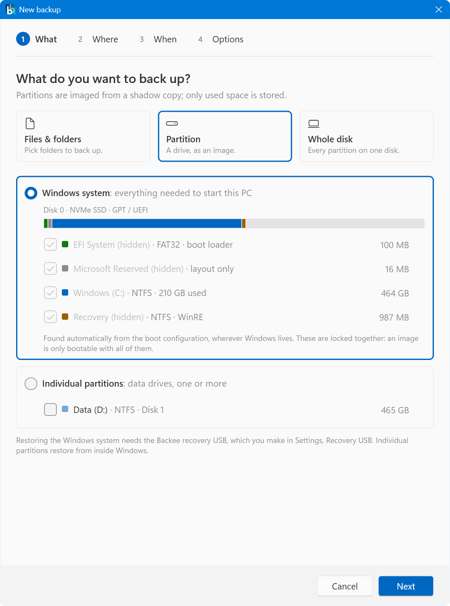
The bar under Windows system is the disk. Every kind of partition has its own colour, and the same colour shows as a small square beside its name in the list: Windows in the accent colour, the boot loader (EFI) in green, the recovery partition in amber, the small Microsoft reserved partition in grey, and any other data partition in a paler accent. Grey at the end is free space. Even a tiny partition gets a visible slice.
Step 2: Where
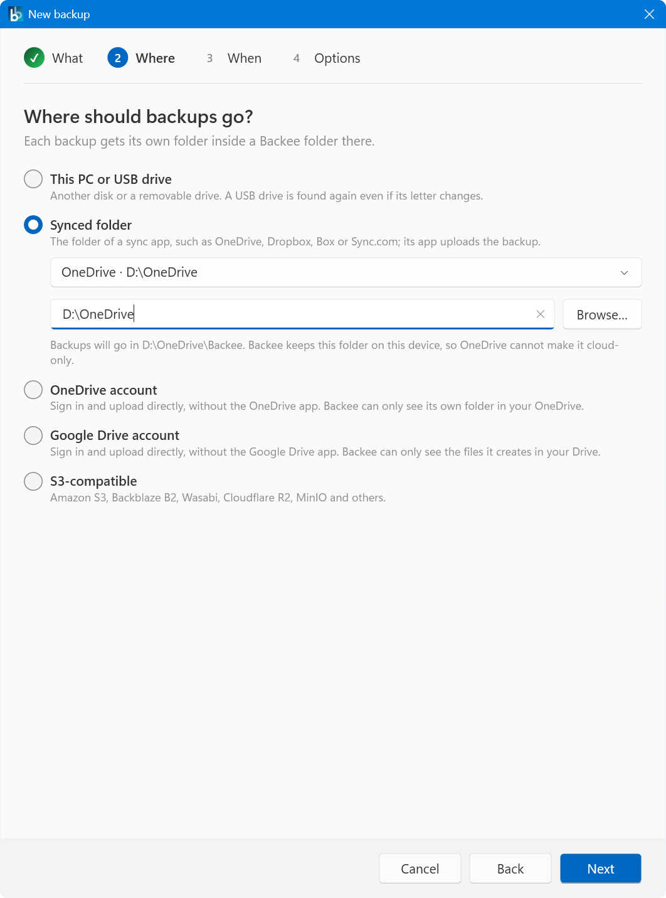
- This PC or USB drive. Another disk or a removable drive. A USB drive is found again even if Windows gives it a different drive letter.
- Synced folder. The folder of a sync app, such as OneDrive, Dropbox, Sync.com, Box Drive or iCloud. The sync app uploads the backup for you. Backee lists the ones it finds on this PC: the well-known apps by name, and any other app that registers its folder with Windows. Nothing is chosen for you: the list starts with Select a synced folder here, or browse below, and Next stays greyed out until you pick one or type or browse to a folder. If what you type is one of the listed folders, it is selected; any other path clears the choice.
- OneDrive account. Sign in with Microsoft and Backee uploads directly, without the OneDrive app.
- Google Drive account. Sign in with Google and Backee uploads directly, without the Google Drive app.
For This PC or USB drive or Synced folder, click Browse… or type a path. Backee makes a folder called Backee there, and a folder for each backup inside it. A line under the box shows where the backups will go. Each choice's settings open right under it.
Backee backs up through a background service that runs separately from your own sign-in. When you create a backup, the service checks that it can reach the folder, and if it cannot, Backee says Backee runs in the background and cannot reach the folder. Some sync apps show their folder only while you are signed in. Google Drive for desktop does this with its G:\My Drive drive: Backee shows a caution when you choose it. Choose a mirrored folder on a local drive instead, or use the Google Drive account choice.
OneDrive account.
OneDrive support is in beta
It may stop working after November 13, 2026, if Backee’s Microsoft sign-in needs to move to a different registration.
Click Sign in with Microsoft. Your browser opens; sign in with your Microsoft account and accept. Backee then shows Signed in as …. Personal Microsoft accounts are what Backee supports; a work or school account is tried, but some organisations turn off the app folder Backee needs (see If something goes wrong). If another OneDrive backup already uses an account, Backee offers Use followed by that account, so you do not sign in again; it copies that backup’s saved sign-in inside the Backee service, and the app never sees it.
Backee sees only its own folder in your OneDrive, inside the Apps folder (its name depends on your language), under a folder named after the backup. It cannot see or change anything else in your OneDrive.
Click Test connection to check the sign-in before you save. Backee says Connected or tells you what is wrong.
When you save the backup, the sign-in is kept by the Backee service, protected by Windows, so scheduled backups can run without asking you each time. To sign in again later, for example after “Backee needs you to sign in to OneDrive again”, choose Sign in again on the Restore page, or Sign in again… in the backup’s ⋯ menu on Home. Backee checks that you sign in with the same account the backup already uses.
Google Drive account.
Click Sign in with Google. Your browser opens; sign in with your Google account. When Google asks what Backee can access, tick the box “See, edit, create, and delete only the specific Google Drive files you use with this app”, then choose Continue. Google leaves that box unticked, and without it Backee cannot save to your Google Drive. Backee waits up to ten minutes for the sign-in to finish; Cancel stops the wait. Backee then shows Signed in as …. If another Google Drive backup already uses an account, Backee offers Use followed by that account, so you do not sign in again; it copies that backup’s saved sign-in inside the Backee service, and the app never sees it.
Backee keeps its backups in a folder called Backee in My Drive, with a folder named after the backup inside it. Do not move or delete files inside that folder, or the backup may stop working. Backee can only see the files it creates itself. It cannot see or change anything else in your Google Drive.
Click Test connection to check the sign-in before you save. Backee says Connected or tells you what is wrong.
When you save the backup, the sign-in is kept by the Backee service, protected by Windows, so scheduled backups can run without asking you each time. To sign in again later, for example after “Backee needs you to sign in to Google Drive again”, choose Sign in again on the Restore page, or Sign in again… in the backup’s ⋯ menu on Home. Backee checks that you sign in with the same account the backup already uses.
S3-compatible storage.
Create the bucket with your provider first, and a key that is allowed to read, write and delete in it. Then fill in the fields:
- Service. Pick your provider. Backee fills in the endpoint for you where it can. For Cloudflare R2 and for MinIO or another service, type the endpoint yourself.
- Region. Pick the bucket’s region from the list, or type it if yours is not listed. It must be the region your provider shows for the bucket.
- Endpoint. The web address of the storage service.
- Bucket and Folder in the bucket. Backee keeps the backup in that folder.
- The key pair. The two boxes use your provider’s own words, for example keyID and applicationKey for Backblaze B2, and a hint under them says where to find them. A key name, if your provider has one, is only a label and is not needed.
Click Test connection to check the details before you save. Backee writes a small test file to the bucket, reads it back and deletes it, then says Connected or tells you what is wrong. The test runs on your PC and sends nothing to the Backee service.
When you save the backup, the keys are kept by the Backee service, protected by Windows. They are never shown again. To change them later, edit the backup and type a new secret key. Leave the box empty to keep the saved one.
For cloud storage, Encrypt this backup is ticked for you in step 4, so only you can read what is stored. You can untick it.
Backups cannot go inside a folder you are backing up. Pick a place outside your backed-up folders, ideally on a different drive.
Step 3: When
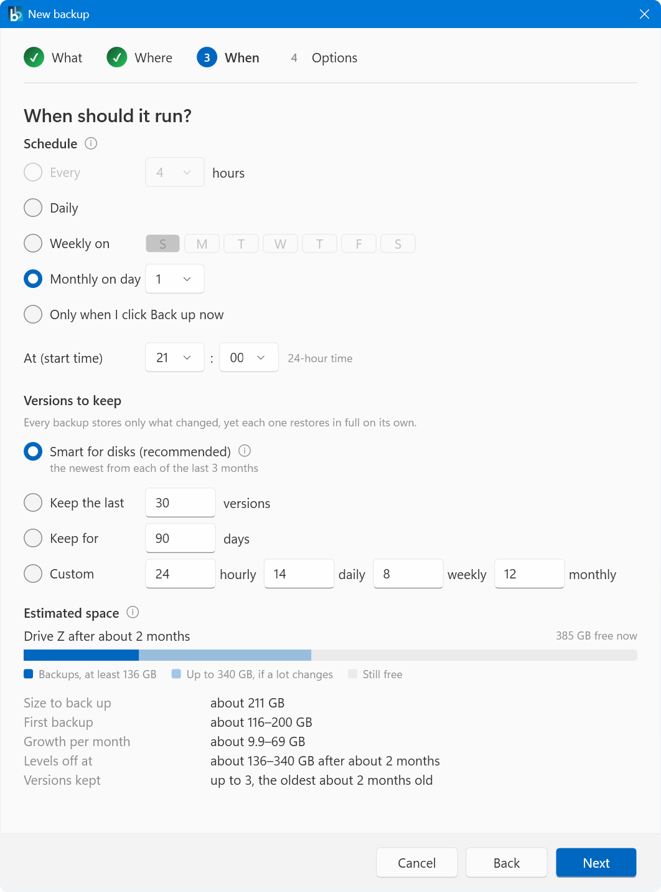
Pick one schedule:
- Every a number of hours. This is greyed out for a partition or a whole disk, because every run reads all the used space on the drive, which can take an hour or more. Point at it to read why.
- Daily at a time you choose. This is the starting choice for folders, at 21:00.
- Weekly on the days you tick. The starting day is Sunday.
- Monthly on day a day of the month. This is the starting choice for a partition or a whole disk, because those backups are large and every run reads all the used space again.
- Only when I click Back up now. Nothing runs by itself.
Times use the 24-hour clock. Point at the i beside Schedule to read what happens when the PC is off at the chosen time: the backup catches up as soon as it can. You can change this in Settings (see Settings).
Versions to keep
Every backup adds a new version, a snapshot of your folders at that moment. Old versions are removed so the backup does not grow for ever. You choose how many to keep:
- Smart for disks (recommended). Shown only when you back up a partition or a whole disk, and the starting choice for them. Keeps the newest backup from each of the last 3 months, so you can go back about 2 months, whatever the schedule. Pair it with a file backup of your folders, which runs more often.
- Smart (recommended). Shown for folders only; a partition or whole-disk backup offers Smart for disks instead. Keeps hourly versions for a day, daily ones for two weeks, weekly ones for two months and monthly ones for a year. A disk backup saved with this choice by an earlier version opens in Edit as Custom with the same numbers, so nothing changes.
- Keep the last a number of versions.
- Keep for a number of days.
- Custom. Your own counts of hourly, daily, weekly and monthly versions.
Estimated space
Below the choices, Backee estimates the space the backup will need at its destination. It starts from the size of what you chose (the used space for a disk), the compression you picked and a typical amount of change, and it works out how many versions your schedule and your choice of versions to keep will hold. The section lists:
- Size to back up. The folders, less any kinds of files you chose to skip, or the used space of the partitions or disk.
- First backup. What the first version takes after compression.
- Each later backup adds. The new data one more backup stores. When backups are a month apart this is the same as growth per month, so it is left out.
- Growth per month. How much a month of backups adds, before old versions are removed.
- Levels off at. The most the backup grows to, and how old its oldest version is by then, once older versions are removed. If your choice never removes versions within a year, this line says After a year instead.
- Versions kept. How many versions the backup holds at most, and how old the oldest is.
- The space bar, above the list. For a drive on this PC or a synced folder, a heading says how the drive will look once the backups level off, for example Drive Z after about 2 months, with how much is free now at the right. The bar is the drive: the solid part is the least the backups will take, the faint part is the most they could take if a lot changes, and the grey is what stays free. A legend under the bar names the three. If the most is more than the free space, the heading turns amber and says which may not be enough. Cloud destinations show no bar.
While Backee measures your folders, the section says Estimating. When you edit a backup that has already run, Backee uses what that backup really stored and how much its recent runs added, instead of typical figures. It is only an estimate: real sizes depend on how much changes and how well it compresses. Point at the i beside Estimated space to read that note.
Step 4: Options
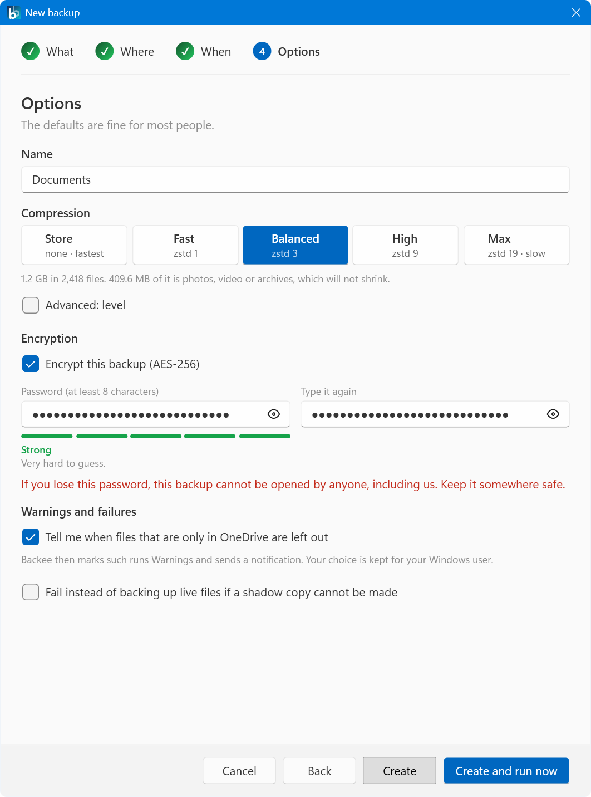
Name starts as the name of your folder or folders. Change it if you like.
Compression makes the backup smaller. A line under the buttons shows the size of your folders and how much of it is photos, video or archives, which will not shrink. The five choices trade speed for size:
| Choice | What it does |
|---|---|
| Store | No compression. The fastest, and the biggest backup. |
| Fast | A little compression, still quick. |
| Balanced | A good mix of speed and size. This is the starting choice, and a good one for most people. |
| High | Smaller backups, slower to make. |
| Max | The smallest backups, and slow. |
Tick Advanced: level to pick any level from 1 to 22 on a slider instead. The slider starts at the button you had chosen. A band under it shows the same four names as the buttons, Fast, Balanced, High and Max, with the current one in bold, and a line under that says what the level means, for example Level 22, Max: The smallest backups, much slower. For archives that rarely change. You can change the starting choice for new backups in Settings.
Encryption
Tick Encrypt this backup (AES-256) to lock the backup with a password. Type it twice. It needs at least 8 characters. A meter shows how hard it is to guess (Very weak, Weak, Fair, Good or Strong) and a short hint says how to improve it.
Keep your password safe
If you lose this password, the backup cannot be opened by anyone, including Markticulous. Keep it somewhere safe, away from the PC. Encryption cannot be changed after the backup is created.
Backee also keeps a copy of the password inside the Backee service, protected by Windows, so scheduled backups can run without asking you each time.
Warnings and failures
For a backup of folders, the last part of the step has two boxes.
- Tell me when files that are only in OneDrive are left out is ticked by default. Untick it to stop the warnings and notifications about those files for this backup (see Files that are only in OneDrive). The choice is kept for your Windows user.
- Fail instead of backing up live files if a shadow copy cannot be made is off by default. Leave it off unless you would rather have no backup than one made from files that were in use.
Finishing
Click Create to save the backup, or Create and run now to save it and start it at once. Creating a backup needs an administrator, so Windows asks once for permission (see Who can change what).
Changing or deleting a backup
On the backup tile, click ⋯, then Edit… or Delete…. Editing opens the same window with a Save button. You can change the folders, schedule, versions, compression and name. The place the backups go and the encryption cannot be changed after the backup is created. A new name does not rename the backup’s folder: the line under Name says where it is saved, and every version stays together there. Deleting asks you first. Backee then stops backing it up, but the versions already stored are kept. Delete that folder yourself if you no longer need them. You can open it again later with Open an existing backup (see Opening a backup from before). The deleted backup's runs stay on the Activity page. If you later create a backup with the same name, it starts with an empty history and never shows the deleted backup's runs. Its folder takes the same name if you deleted the old folder; if the old folder is still there, the new one gets a number added (for example documents-2), so the old versions are never mixed in.
05Getting files back
Open Restore in the main window. Restoring needs an administrator, because a backup can hold every user’s files. The first time, the page says Restoring needs administrator rights. Click Continue as administrator. Windows asks once, and Backee opens this page again.
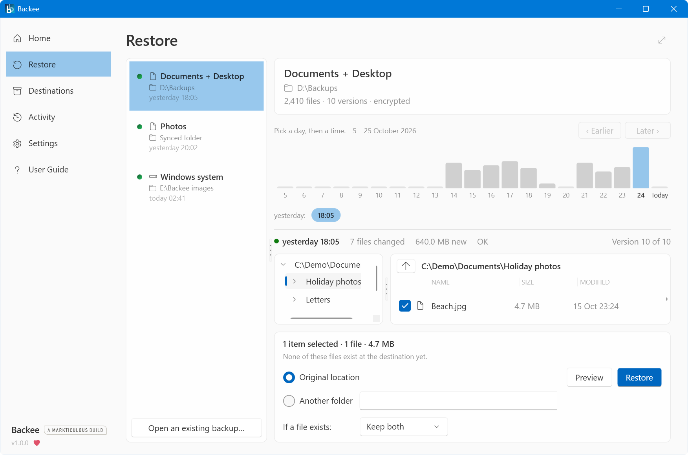
- Pick the backup in the list down the left. Each backup shows a coloured dot for how it is doing, where it is kept (OneDrive, Google Drive, a provider such as Backblaze B2, a synced folder, or a folder or drive on this PC) and when its latest version was made. Drag the divider beside the list to make it wider or narrower. The card at the top of the page then names the backup, says exactly where it lives, and counts its files and versions (and says encrypted if it is).
- Pick the version in the box under the card. Each version shows its date and how many files it holds. Below it, a timeline has one dot for each version, with the oldest at the left and the newest at the right. Click a dot to pick that version.
- Pick folders in the tree on the left. The list on the right shows what is inside, with its size and date. Double-click a folder to open it. The up arrow goes back one level. Drag the divider to give either side more room.
- Tick the files and folders you want. A ticked folder includes everything inside it. A line below the lists says how many items, files and bytes you picked.
- Choose where they go: Original location, or Another folder (type a path or click Browse…). Choosing another folder is the safest, because nothing of yours is touched. Each folder you backed up becomes a folder inside the one you pick.
- Choose what happens if a file already exists, then click Restore.
If a backup cannot be read
When Backee cannot read a backup, the card at the top says why. If the sign-in to OneDrive or Google Drive has expired, the card has a Sign in again button. Click it and your browser opens; sign in with the same account the backup uses, and the page reads the backup again. You can also choose Sign in again… in the backup’s ⋯ menu on Home. If an S3 provider refused the access key, the button is Edit backup, so you can enter a new key. For anything else, such as a drive that is not plugged in or no connection, fix the cause and click Try again. A backup with no versions says No versions yet. Back it up first.
If a file exists
- Keep both
- The default. The restored copy is saved beside the old one, with
(restored)in its name. Nothing is lost. - Replace
- The restored file takes the place of the one there now. When you restore to the original location, Backee asks you to confirm first, because this cannot be undone.
- Skip
- Files that already exist are left as they are.
A line under your choice says how many files already exist and what will happen to them. Click Preview to see what a restore would change. Nothing is written until you click Restore.
While it runs, a box shows Restoring… with a progress bar and a Stop button. After you confirm, the box says Stopping with moving dots and Stop is greyed out until the restore has ended. Files restored before you stop are kept. At the end Backee tells you how it went: Restore finished, Restore finished with problems (some files could not be restored because that part of the backup is damaged, and it names them), Restore stopped or Restore failed.
Closing the window while it runs
A restore is done by the Backee service, not by the window, so it keeps running if you close the window or the tray icon. Open Backee again and the restore shows up at once: on the Restore page with its progress bar and Stop button, on Home (the top line and the tile of that backup say what it is restoring to and how far it has got), and in the tray icon, which animates while a restore runs. When it ends, the Restore page tells you how it went, the same as if you had never closed the window. Every restore that has finished or been stopped is also listed in Activity.
A restore that is cut off, by Stop, a power cut or a crash, never leaves a half-written file behind and never damages the original. Backee writes each file under a temporary name and swaps it into place only when it is complete. A file that was already there stays exactly as it was until its replacement is whole.
Opening a backup from before
Use Open an existing backup… when you have a new PC, have reinstalled Windows, or deleted a backup from Backee by mistake. The backup folder is still where you left it, and Backee can read it again. The button is under the backup list on Restore. When there are no backups yet, Home has a card for it too.
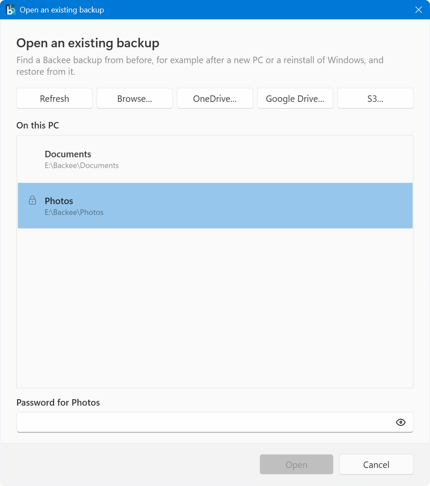
- Choose where to look. On this PC searches every drive; click Refresh to search again, for example after you plug in a USB drive. Browse… looks in any folder you choose. For OneDrive or Google Drive, sign in as you do in New backup. For an S3 provider, enter the bucket and the keys.
- Each backup found shows its folder and where it is. Pick one. If it is encrypted, type its password. After five wrong passwords Backee makes you wait five minutes before you try again.
- If the backup is already in Backee, the window says Already in Backee as and its name, with a Show it link that takes you to it on Restore.
- Open is greyed out until a backup, and its password if it has one, is chosen. Click it.
Backee adds the backup as Restore only. Its tile on Home has a Restore only label and says Opened from and the place. The main button is Restore…, and the backup never runs by itself. You can restore from it at once, as described above.
To keep backing up to that folder, choose Back up to this folder again… in the tile’s ⋯ menu, or use the link in the card at the top of Restore. The backup window opens filled in from the backup’s saved settings: its name, folders, schedule, versions to keep, compression and exclusions. Where it goes and the encryption are fixed. A folder that is not on this PC shows … is not on this PC. Remove it or choose another before you save. Click Save and run now and the backup becomes a normal backup again and runs at once. It keeps its history, so this run stores only what changed since the last version.
To take the backup out of Backee, choose Remove from Backee in the ⋯ menu. Only Backee forgets it. The folder and everything in it stay where they are.
Every backup keeps a small settings file in its own folder, updated after each successful run. It holds the name, folders, schedule, versions to keep, compression and exclusions. It never holds a password, a sign-in, or where the backup is kept. A backup made before this file existed has none, so Backee guesses: the folders come from the newest version, and the rest are the same as in New backup.
06Disk and partition images
A file backup keeps your files. An image keeps a whole drive or disk exactly as it is, with its file system, so it can be put back as it was. Choose Partition or Whole disk in Step 1 of the New backup window (see Making a backup). Steps 2 to 4 work as they do for files, and an image can go to the same places.
What is imaged
Backee reads only the space that is in use, from a shadow copy, so the drive can stay in use while it is backed up. Parts that are empty are skipped. Parts that did not change since an earlier run, or that appear more than once, are stored once, so a repeat run adds little to the backup. Windows cannot tell Backee which parts changed, so every run still reads all the used space. Step 1 shows about how much used space will be read.
- Partition
- Two choices. Windows system backs up everything needed to start this PC, found for you; its parts are locked together, because an image is only able to start the PC with all of them. Individual partitions lists the data drives, and you tick one or more.
- Whole disk
- Every partition on the disk you pick, with the partition table.
Some rows are greyed out, and each says why. Backee does not image dynamic disks, Storage Spaces or removable drives, and it does not image the drive that holds the backup itself, because the image would try to include its own backup. Nothing is ever written to a disk while it is backed up.
BitLocker
If an image includes a drive that uses BitLocker, Backee asks for a password for the image in Step 4, because the files in the image would otherwise be readable by anyone who can reach the backup. If you do not want a password, tick Store this image unencrypted. Anyone who can reach the backup can read these files. A line then repeats what that means. Choose this only for a backup in a place that only you can reach.
Three ways back
Open Restore and pick the image backup and a version. The page lists the partitions or disks in that version. A Windows system backup is one row, with the parts it holds named under it, because it is only ever put back as a whole. Pick a row and choose one of these.
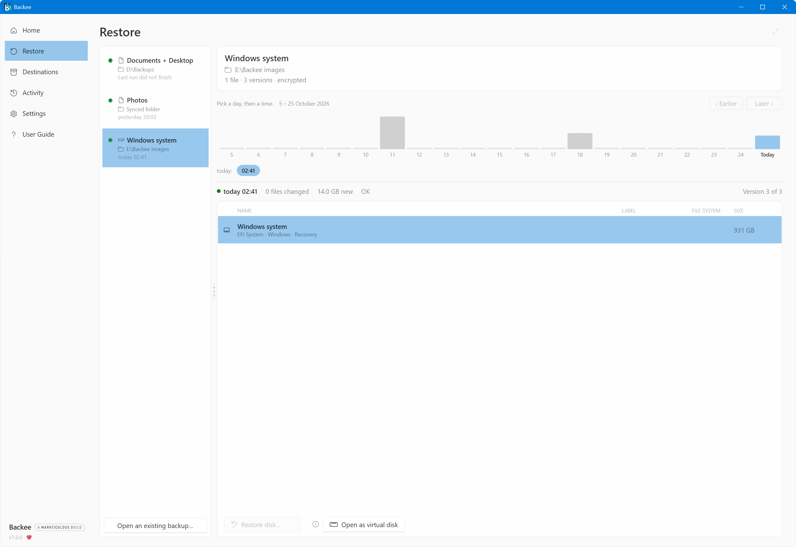
- Restore partition…
- Writes the partition back to its original place or to another partition that is at least as large. Everything on the target is replaced. Backee asks you to confirm, saying what will be replaced, and takes the target offline first, so close every program that is using it. If a restore is stopped or fails, the target is incomplete, and Backee says so and tells you to restore it again.
- Restore disk…
- Writes a whole-disk image to another disk that is at least as large. Every partition on the target disk is erased. Backee asks twice, and the second question names the disk by its model and size, so the wrong disk is hard to pick. The restored disk gets new disk and partition identifiers.
- Open as virtual disk
- Works for any image and changes nothing on your disks. Choose a folder, or click one of the fixed drives shown, and Backee builds a virtual disk there and opens it read-only with a drive letter, so you can copy files out in File Explorer. A box in the window shows how much space the virtual disk needs and how much is free, green when there is room and red when there is not. While it is open, a green Mounted bar at the top of the Restore page names the drive letters, and the backup’s tile on Home shows Mounted as G:. Click Detach on that bar, or eject the drive in File Explorer, and the virtual disk is removed. Detach asks first. Tick Also delete the restored disk file to remove the disk file and free its space. Your backup is not touched. If you leave it unticked, the file stays in its folder, so you can open it again from the Restore page.
Backee never restores over the drive Windows is running from. A restore can be stopped, and the progress box works as it does for files (see Getting files back).
The Windows drive and the recovery USB
The Windows drive and the partitions that start the PC cannot be put back from inside Windows, because Windows is using them. A Windows system image is kept safely, and you can open it as a virtual disk to copy files out (the Windows partition gets its own drive letter), but Restore disk… is greyed out for it. To put it back, use the Backee recovery USB, which starts the PC without Windows (see Recovery USB).
07Recovery USB
Windows cannot be put back from inside Windows, because Windows is using its own drive. The Backee recovery USB is a USB stick that starts the PC without Windows and opens Backee’s restore wizard. Use it when Windows will not start, when the disk has failed, or when you move to a new disk or a new PC. With it you restore a Windows system or whole-disk backup (see Disk and partition images).
Make the stick now, while the PC works, and keep it somewhere safe. It holds the tools to restore, not your backup. Keep a Windows system backup on an external USB drive as well, and keep that drive with the stick. A large external drive can be both at once (see Using a large external drive).
Making a recovery USB
Open Settings and choose Recovery USB. This page is open to every user. It shows when a stick was last made on this PC, the build of the Windows Recovery Environment that Backee will copy, and a USB stick list of the USB drives that are plugged in (sticks, and external SSDs or hard drives), each with its model and size. While Backee looks, a busy bar and Looking for USB sticks… show. The list updates by itself when you plug a stick in or take one out. Refresh looks again.
- Greyed sticks
- A drive under 2 GB is too small. The disk Windows runs from, a disk a backup images and a disk a backup saves to are never listed. Each greyed row says why.
- One usable stick
- When exactly one usable stick is plugged in, it is selected already. When several are plugged in and exactly one of them is already a Backee recovery USB, that one is selected.
- A stick that is already a recovery USB
- Its row ends with · Backee recovery USB and the date it was made. When you select it, Backee says, for example: This stick is already a Backee recovery USB, created 25 Oct 2026 (Backee v0.2.1). Making it again replaces it.
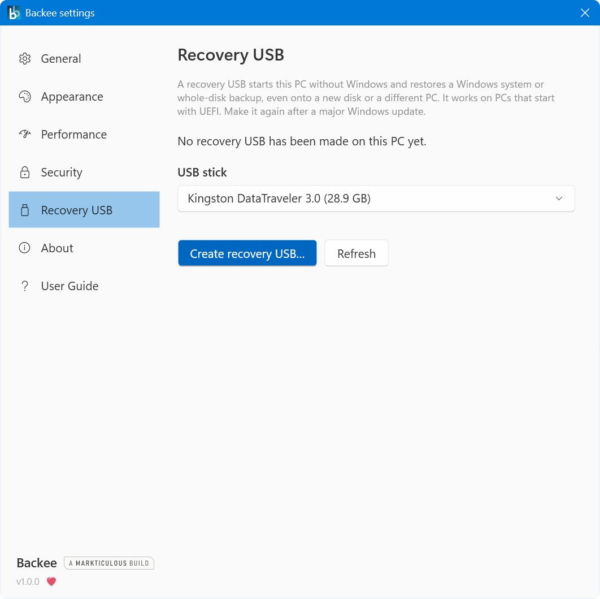
Click Create recovery USB…. Backee asks Erase this USB stick? and names the stick. Everything on it will be erased. If you agree, click Erase and create, and then Windows asks once for administrator permission at that moment. Backee keeps running (see Who can change what).
One bar shows the whole job, with the step and about how many minutes are left. It takes about 3 to 6 minutes. The stick gets a 4 GB start-up partition. The rest of a stick under 64 GB is left free. A drive of 64 GB or more is made differently (see Using a large external drive). When it is done, a green tick shows with A Backee recovery USB was created successfully. Keep it somewhere safe.
Using a large external drive
A USB drive of 64 GB or more, such as an external SSD, can be the recovery USB and the home of your Windows system backup at the same time. Backee gives it two partitions: a 4 GB start-up partition, and the rest as an NTFS partition named Backee backups with its own drive letter.
- Room for Windows. The drive must be able to hold one copy of the Windows system backup, which is about a quarter more than the space Windows uses, rounded up to the next 10 GB. If it cannot, the page says This drive is too small to hold the Windows system backup as well (it needs about 120 GB). It will only be made a recovery USB. It is then made like a stick, and the number shown is your own.
- Erase everything. If the drive already holds files, a box Erase everything on this drive shows, and Create recovery USB… stays greyed until you tick it. The whole drive is erased. Keeping files on it is not offered, so copy them off first.
- Never listed. The disk Windows runs from, a disk that a backup images and a disk that a backup saves to are not offered, so a backup drive you already use cannot be wiped by mistake.
When the drive is done, the page says The recovery drive is ready. and shows the accent button Back up Windows to this drive…. It opens New backup already filled in, with the choices that matter for a recovery drive fixed. If you cancel, nothing is created.
- What is fixed: the Windows system, saved to the root of that drive, Monthly on day or Only when I click Back up now, and Keep the last. The other choices on those steps are greyed out. The last button is Create and run now. When the backup has started, Settings closes and the main window shows the Home page.
- What you can change: the number of versions to keep, the day of the month and the start time, and Encrypt this backup.
- Why one copy: a Windows image is large, and the drive is sized for one copy, so the number starts at 1. Raise it only if the drive has room for more.
- Why encrypted: the box is ticked because the drive is carried around, and it holds the whole of Windows, including your files and saved sign-ins. If it is lost, the password keeps them private. Keep the password safe, because without it the backup cannot be restored. You can untick the box.
- Already backed up elsewhere: if Windows is backed up to another place, the last step says You already back up Windows to … This adds a second backup to this drive.
If the drive is unplugged when the backup is due, the backup waits and runs when you plug the drive in again.
Making the drive again. After a major Windows update, select the drive and click Create recovery USB… again. Backee asks Make this recovery drive again? and says Backee replaces the start-up files on this drive. Your backups on Backee backups (E:) are not touched. Only the start-up partition is redone. For such a drive, Backee looks at the drive itself, not only at its own list of backups, and the page shows one of three lines in cyan under the list.
- Holds the Windows system backup · newest version and its date: the drive holds a backup that Backee already has. No button shows.
- Holds a backup from a date that is not in the Backee index. Open it with Restore, Open an existing backup. This happens when you removed the backup from Backee but its files are still on the drive. Click Open it…, which opens Open an existing backup, and choose the backup from the drive. This is shown instead of Back up Windows to this drive…, so you do not make a second full copy. The line says “a backup” and not “the Windows system backup” because Backee cannot tell what an encrypted backup holds until you give its password.
- No backup on this drive yet, with the Back up Windows to this drive… button.
Starting and restoring. Start the PC from the drive as described below. Backee’s restore wizard finds the backup on the same drive by itself, so you only need to enter the password and choose a version. The drive itself cannot be chosen as the disk to restore onto.
Cancelling
While the stick is being made, Cancel takes the place of Refresh. It asks first: Stop making it or Keep going. It also says whether the stick has been touched yet. Stopping can take a minute or two.
- The first two thirds or so of the job is preparing files on the PC. If you stop then, the stick is as it was, including an earlier Backee recovery USB.
- After that, the stick has been erased. If you stop then, a red cross shows and the stick cannot start a PC until it is made again.
Starting a PC from the stick
Plug the stick into the PC. Then do one of these.
- At power-on: press the one-time boot menu key, often F12, F11, Esc or Del (the maker’s start-up screen names it), and choose the USB stick.
- From Windows: open Settings, then System, then Recovery. Next to Advanced start-up click Restart now, then choose Use a device.
The PC’s own start-up menu comes first. It looks different on every PC, so it is not shown here. Secure Boot can stay on. The Windows logo and a spinner show while the stick starts. Then Backee’s restore wizard opens.
Restoring with the stick
This is what you see after the PC starts from the stick. The wizard shows the Backee logo, name, version and build date at the top. Times are shown in the time zone saved with the stick. Restart PC is on every screen until the restore starts, and it asks first. While a restore is writing, only Cancel restore shows, and when it is finished, only Restart now.
- Find your backup. Backee searches every attached drive. Refresh searches again, for example after you plug in the drive. A backup in a OneDrive or other cloud folder is listed in grey: This is in a OneDrive or cloud folder, which cannot be read here. Copy it to a USB drive first. Cloud files cannot be read without the cloud app.
- Password. Asked only for an encrypted backup. After five wrong tries, Backee makes you wait 5 minutes.
- Choose a version. Each version is listed with the date it was made. Only Windows system and whole-disk backups can be restored from the stick. Partition backups are restored from inside Windows.
- Choose the disk. The disk Backee started from, the disk that holds the backup, and any disk that is too small are greyed, each with its reason. A tick box, This is a different PC or a new disk controller, is ticked for you when the original disk is not found.
- Drivers. Shown only for a different PC (see below).
- Erase and restore? Tick I understand that everything on this disk will be erased. Only then can you click Restore. If the original Windows disk is still connected, the restored copy gets new disk IDs so the two never clash, and “(restored)” is added to its drive name (you can rename it), and the PC starts from the restored disk afterwards; start the original from the PC’s start-up menu.
- Restoring. One bar covers the whole job. A line names the step, such as Restoring partition 2 of 3: Windows, drive C: (NTFS), and another shows how much is done, the speed and about how many minutes are left. Cancel restore stops it, after Backee asks. When the writing ends, Backee checks what it wrote (Checking partition…).
- Restore finished. Remove the stick, then click Restart now.
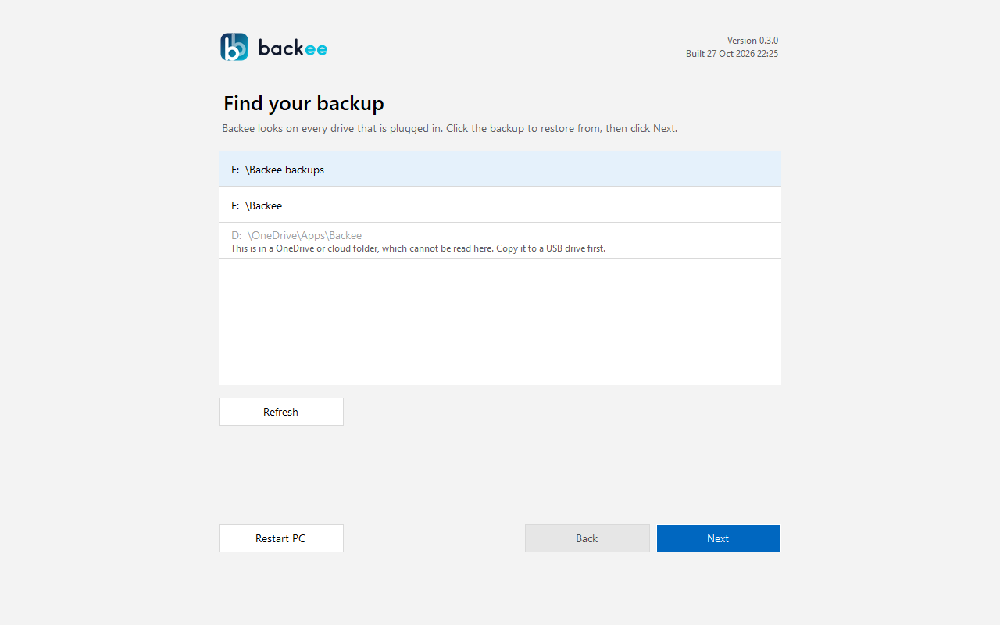
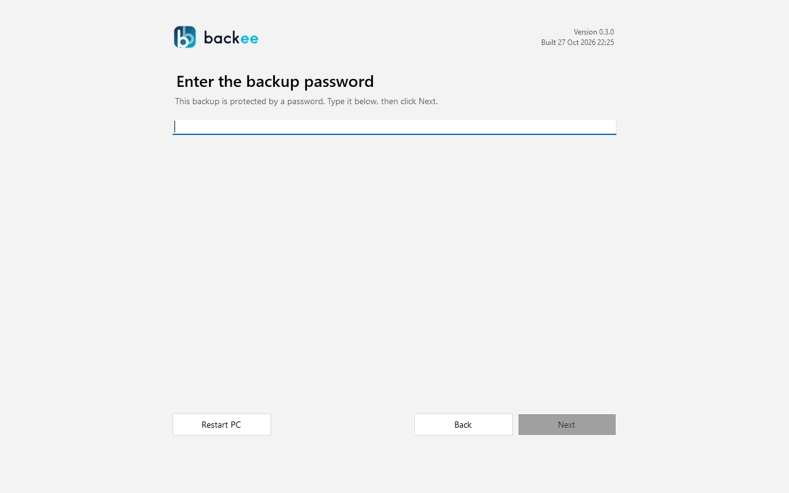
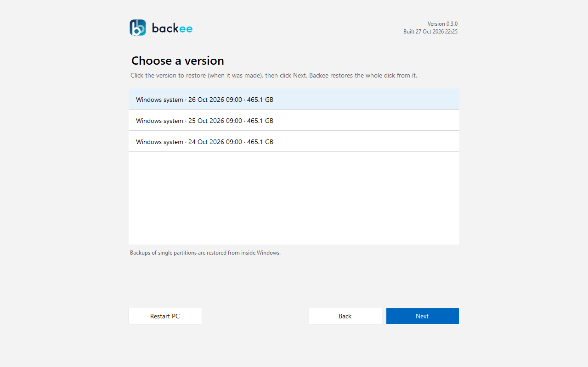
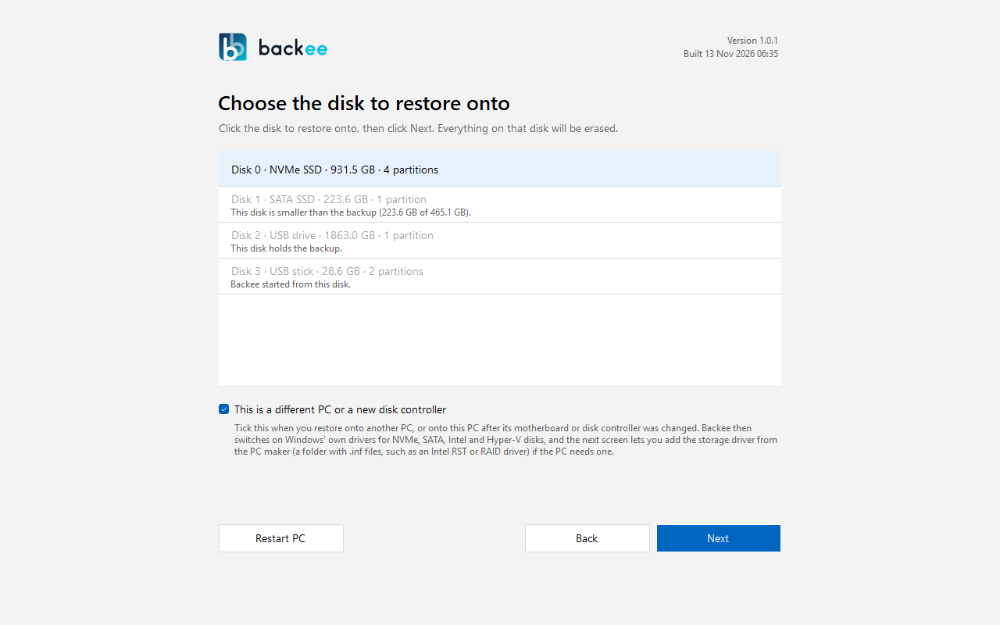
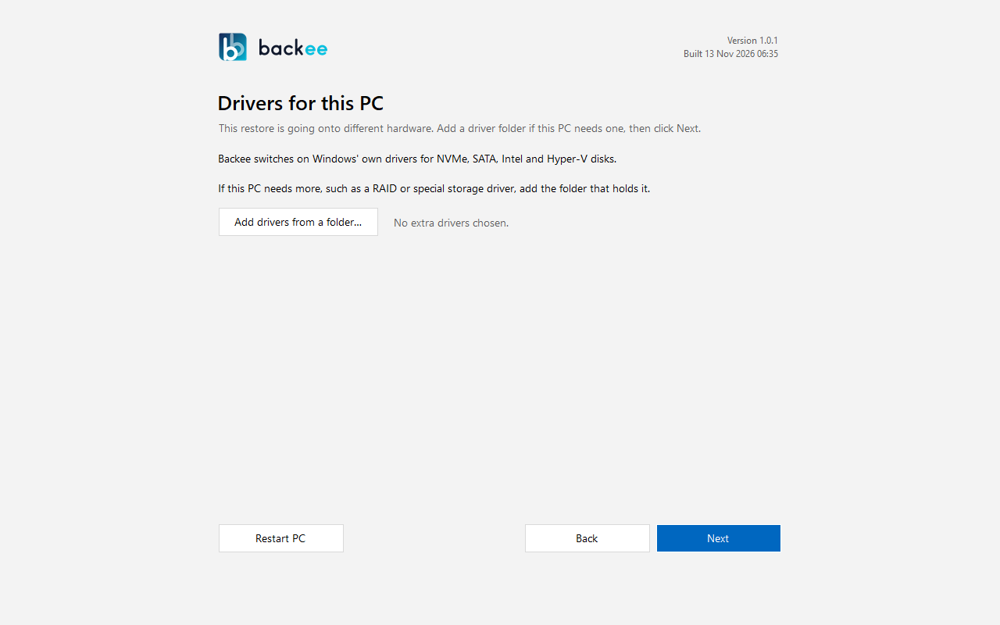
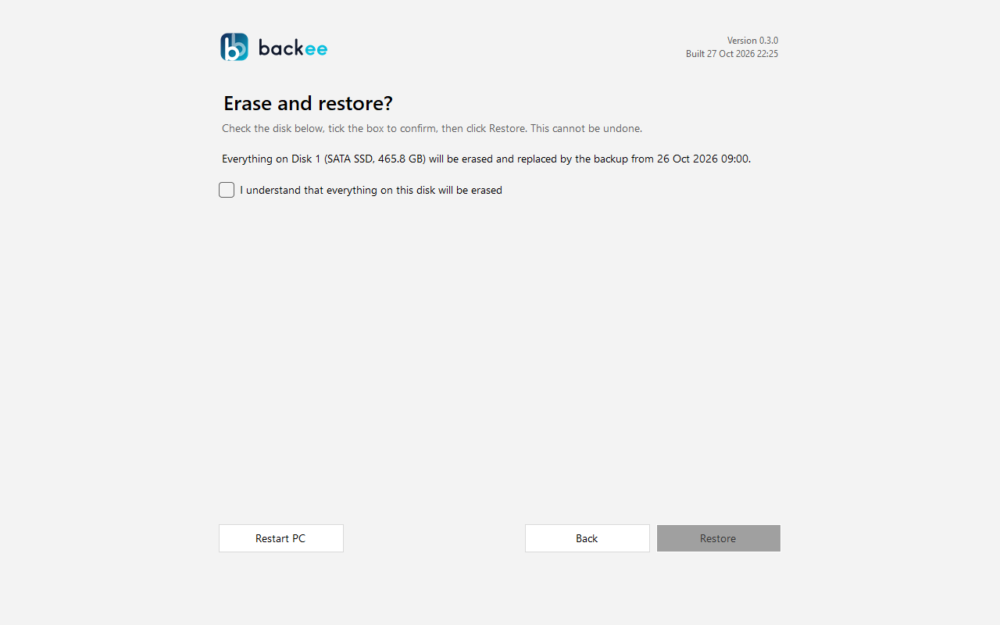
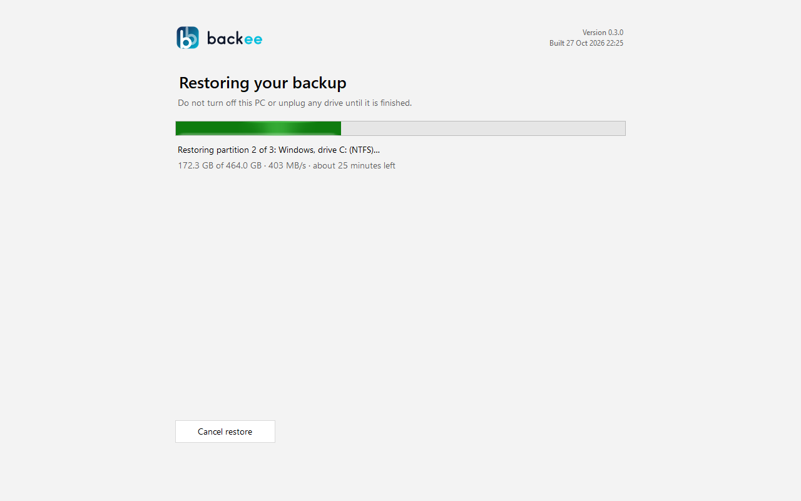
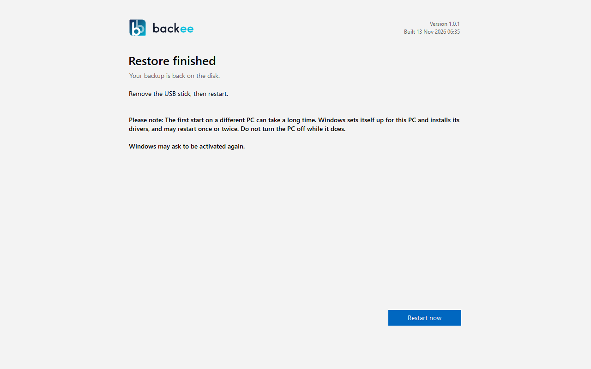
A new PC or a new disk
The target disk must be the same size as the original or larger. If it is larger, the extra space is left unallocated; you can add it in Windows afterwards with Disk Management.
Tick This is a different PC or a new disk controller when you restore onto another PC. Backee then switches on Windows’ own storage drivers, so Windows can find its disk. If the PC needs a driver from its maker, click Add drivers from a folder… on the Drivers screen and choose the folder. The first start on a different PC can take a long time, because Windows sets itself up for that PC and installs its drivers. It may restart once or twice. Do not turn the PC off while it does. Windows may also ask to be activated again.
If the recovery USB cannot be made
If the PC has no Windows Recovery Environment, the Recovery USB page says so. It can be turned back on. Open Terminal as administrator and type reagentc /enable, then open the page again. If you choose No at the Windows prompt, nothing is changed and the stick is not erased.
Limits
- UEFI PCs only. A PC that starts in legacy BIOS mode cannot start from the stick.
- Only PCs that can run the Windows version the stick was made from. A very old PC, such as a Dell OptiPlex 960 from the Core 2 era, cannot.
- Backups on local drives only. A backup that is only in OneDrive or other cloud storage cannot be restored from the stick. Keep a Windows system backup on an external USB drive as well.
- The target disk must be the same size or larger.
- Make the stick again after a major Windows update.
08Activity
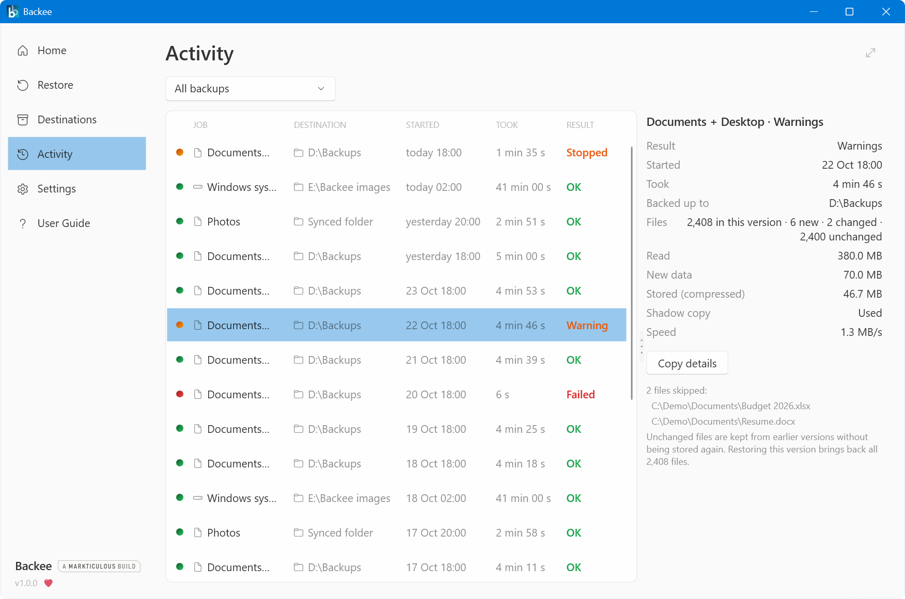
Activity lists every backup that has run and every restore, newest first, with the backup name, when it started, how long it took and the result. A restore has a small Restore tag after its name. A box at the top limits the list to one backup. The Warnings and Waiting labels on a Home tile, and Show details in its ⋯ menu, jump here with that backup chosen. If nothing has run yet, the page says No backups or restores have run yet.
Click a run to see its details on the right:
- Files
- How many files this version holds, and how many of them were new, changed and unchanged since the last backup. Unchanged files are kept from earlier versions without being stored again, so a run where nothing changed reads and stores nothing, yet its version still restores every file.
- Read
- How much data Backee read from your files. Files that did not change are not read again.
- New data
- How much of what was read is not already in the backup. Backee uses deduplication ("dedup" for short): it splits files into pieces and stores each piece only once. A piece that is already in the backup, from an earlier version or another copy of the same file, is not stored again, so a renamed or copied file adds no new data.
- Stored (compressed)
- How much space the new data takes in the backup after compression.
- Shadow copy
- Used if Backee copied from a frozen view of the drive, or Not used.
- Speed
- How quickly the data was read.
Under the facts, notes list any warnings and the files that were skipped, usually because they could not be read. Drag the thin handle between the run list and the details to give either one more room. Click Copy details to copy all of it as text, for example to send to someone who is helping you. Stop shows while a backup is running.
A restore shows its own details: the result, when it started, how long it took, how many files and how much data it restored, where the files went (Original locations or the folder you chose), and how many files failed or were skipped. A restore that was stopped says Stopped before it finished. Activity keeps counts only for restores, not the names of the files.
Mark as reviewed
Some warnings are understood and will not go away, for example files that are online-only in OneDrive. When you have looked at a run that ended with warnings, or was stopped, choose Mark as reviewed in the ⋯ menu on its Home tile. The tile and the tray icon turn green, the tile says OK · reviewed, and Home no longer counts the backup as needing attention. Nothing is changed in the backup, and Activity still says Warnings for that run. The mark applies to that one run: the next run that ends with warnings turns the tile and the tray icon amber again. A run that failed cannot be marked as reviewed.
Files that are only in OneDrive
When a files backup finishes and the only gap is files that OneDrive keeps in the cloud, Backee tells you. A Windows notification appears with the title <backup name> is backed up and two lines: how many files on this PC were backed up, and how many files are only in OneDrive, so were not. The Home tile says the same on its last line, for example 12,304 files backed up and 28,699 only in OneDrive. Activity starts its details with how many files on this PC were backed up.
The notification has two buttons. Clicking the notification itself opens Activity for that backup.
- Download them to this PC. Backee asks Download files from OneDrive? and tells you how many files, how large they are in total, and how much free space this PC has. If there is not enough free space for all of them, it says so. Choose Proceed and Backee sets those folders to Always keep on this device. OneDrive then downloads the files in the background, and the next backup includes the files that have arrived. Choose Cancel and nothing changes. The same choice is in the ⋯ menu on the Home tile, as Download cloud files to this PC….
- It's ok, don't tell me again. Runs whose only gap is online-only files then show as OK in Home, Activity and the tray, and Backee stops sending this notification for that backup. The Home tile and Activity still state how many files are only in OneDrive. The choice is for that one backup and for your Windows user, and it needs no administrator. Runs with files that were skipped or could not be read still show Warnings.
To undo the choice, edit the backup and open the Options step. Tick Tell me when files that are only in OneDrive are left out, then choose Save. Backee then marks such runs Warnings again and sends the notification. Unticking the box makes the same choice as It's ok, don't tell me again. The box is only there for backups of folders.
This is different from Mark as reviewed. Mark as reviewed covers one run only, and the next run with warnings turns amber again. This choice stays in force for every later run of that backup, but only for online-only files.
The notification comes from Backee while it runs in the tray, so none appears when Backee is closed. It appears once for each run. Windows Settings, System, Notifications controls whether Windows shows notifications from Backee.
The four results
- OK
- Every file was backed up.
- Warnings
- The backup finished, but some files were skipped or had a problem. The notes name them.
- Failed
- The backup did not work. The notes say why.
- Stopped
- The backup was stopped, by you or by a power cut or crash, before it finished. The earlier versions are safe.
09Settings
Open Settings from the main window or the tray menu. Changes apply at once. There is no Save button. The list on the left also shows Backee with the Markticulous plate and the version at the bottom, on every page. Click the plate to open About.
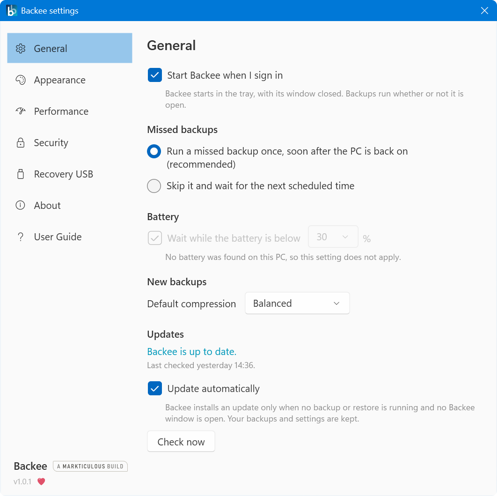
- General
- Start Backee when I sign in opens the tray icon when you sign in to Windows. Backups run whether or not Backee is open. Missed backups decides what happens when the PC was off at the scheduled time: run it once soon after the PC is back on (recommended), or skip it and wait for the next time. Battery lets a backup wait while the battery is below a level you pick, and start as soon as the PC is plugged in. Default compression is the starting choice for new backups. Updates says whether a newer Backee is available. Update automatically installs it only when no backup or restore is running and no Backee window is open, and your backups and settings are kept. Check now looks at once, and Install now shows when an update is ready. Install now does not wait for Backee's windows: they close, the update installs, and Backee starts again. It waits only for a backup or restore that is running.
- Appearance
- Choose Follow Windows, Light or Dark.
- Performance
- Work priority is Normal, Low (recommended) or Lowest. Low keeps Backee out of the way of your programs. Worker threads is how many processor cores Backee uses. Automatic uses all but one. Backups at the same time is 1, 2 or 3. Backups that share a place always take turns.
- Recovery USB
- Makes the Backee recovery USB (see Recovery USB).
- Security
- Explains who can manage Backee (see Who can change what) and lists the saved passwords of encrypted backups, each with a Remove button. A backup whose password you remove cannot run until its password is entered again.
- About
- The Backee name drawn as a wordmark beside the app icon, the version, Open data folder, Copy version info and the support section (see Support Markticulous).
- User Guide
- Opens this guide in your web browser.
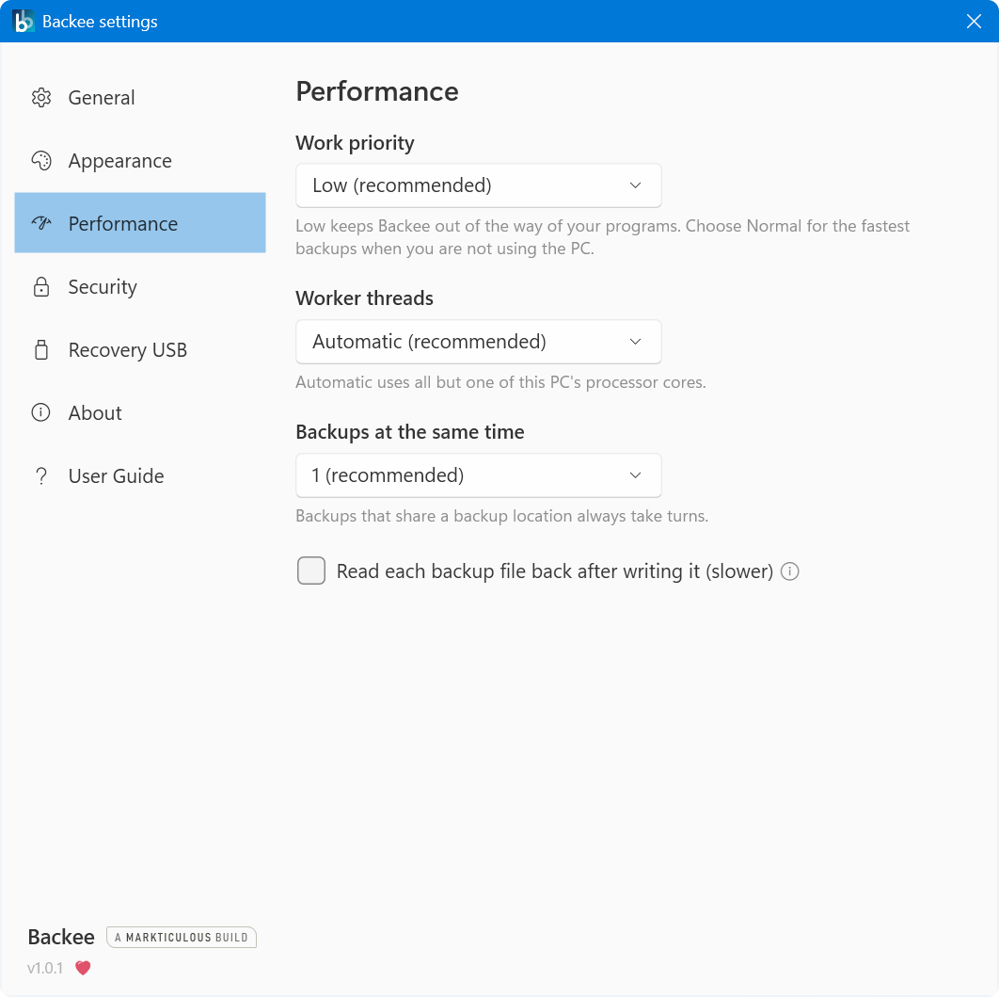
The settings under Missed backups, Battery, Performance and Security belong to the Backee service, so they change things for everyone who uses this PC. They need an administrator. Until then they are greyed out and a note says so. Click Continue as administrator and Backee asks Windows once. Start-up, default compression and the theme are only yours and need no permission. On a PC without a battery, the battery options are greyed out, because there is nothing for them to do.
10Who can change what
Backups can hold the files of everyone who uses the PC, so Backee keeps the important changes for administrators.
| Anyone | Administrators only |
|---|---|
| See the status of every backup | Create, edit and delete a backup |
| See the Activity list | Restore files |
| Back up now and Stop | Pause and resume all backups |
| Change their own theme, start-up and default compression | Change the service settings and remove saved passwords |
| See the USB sticks plugged in and when a recovery USB was last made | Make a recovery USB (it erases the stick) |
Why Backee asks
The part of Backee that does the work, the Backee service, runs with full rights on the PC. It has to: it reads every file to back it up, writes files back where they belong, and copies and restores whole disks. If any program could tell it what to do, a program running in another person’s account, or harmful software running as you, could use it to restore someone else’s files, erase a disk, or send your backups somewhere else. So the service only takes those orders from an administrator who has said yes to Windows’ prompt.
The Backee window itself runs with ordinary rights. It starts with Windows from the tray, and asking for permission at every sign-in would be a nuisance. Windows decides a program’s rights when it starts and cannot raise them later, so Backee gets administrator rights in one of two ways.
For one change: a prompt at that moment
Creating, editing or deleting a backup, pausing and resuming, and making a recovery USB each start a small helper with administrator rights for just that change. Windows shows its usual prompt asking whether to allow the app to make changes. Choose Yes. The Backee window keeps running as it was. If you choose No, nothing changes: no backup is saved, no stick is erased. If you are not an administrator, Windows asks for an administrator’s name and password instead.
For a whole page: Backee restarts as administrator
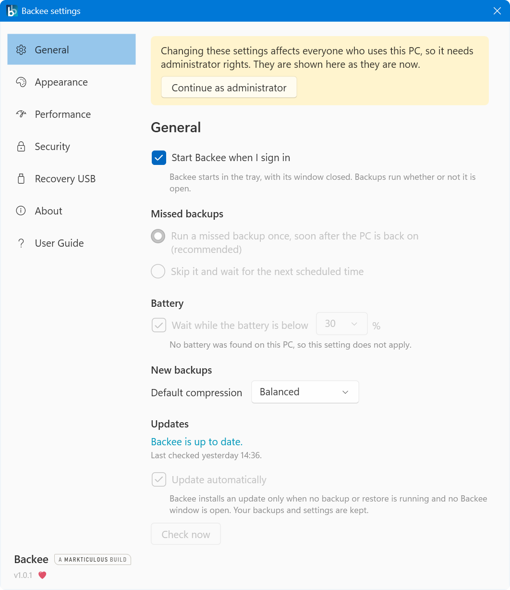
Restoring files, and the service settings in Settings, involve many steps on one page (browsing a backup’s folders, choosing files, changing several settings), so a prompt for each would be tiring. These pages show a Continue as administrator button instead. It asks Windows once, closes Backee and opens it again with administrator rights, back on the same page, with the main window behind any Settings window. Backee keeps those rights until you close it. You do not have to sign out and in as an administrator.
11Keeping your backups safe
Shadow copies
A program that is using a file often stops others from reading it. Backee avoids this with a shadow copy, a frozen view of the drive that Windows makes for a moment. Backee copies from that view. Files that are in use, such as an open Outlook file, are still backed up, exactly as they were when the backup began. In the Activity details, Shadow copy shows Used when this worked.
Never half-written
Backee never overwrites an earlier version. If a power cut, a crash or an error stops a backup in the middle, the earlier versions stay safe and the run shows as Stopped or Failed. If a folder you are backing up has gone missing, the backup fails rather than saving an empty version, so good versions are never pushed out.
Keep backups on a different drive
A backup on the same drive as your files is lost with them. Save to another disk, a USB drive or a synced folder. If a USB drive is unplugged when a backup is due, the tile shows Waiting. The backup runs by itself as soon as the drive is back.
Your password
For an encrypted backup, your password is the only key. If you lose it, nobody can open the backup, including Markticulous.
12Why Backee is fast
- Only changes are read. Files whose size and modified time match the last backup are not opened. They are still part of every new version: each version can restore every file, changed or not.
- Duplicates are stored once. Files are split by content, so a chunk already in the backup is never stored or uploaded again, even if it moved or was renamed.
- No effort wasted on data that will not shrink. Photos, video and archives skip compression, and anything that does not compress by at least 3% is stored as it is.
- All cores work in parallel, at low priority, so the PC stays responsive.
That is why the first backup takes a while, and why the next ones are much quicker.
13Support Markticulous
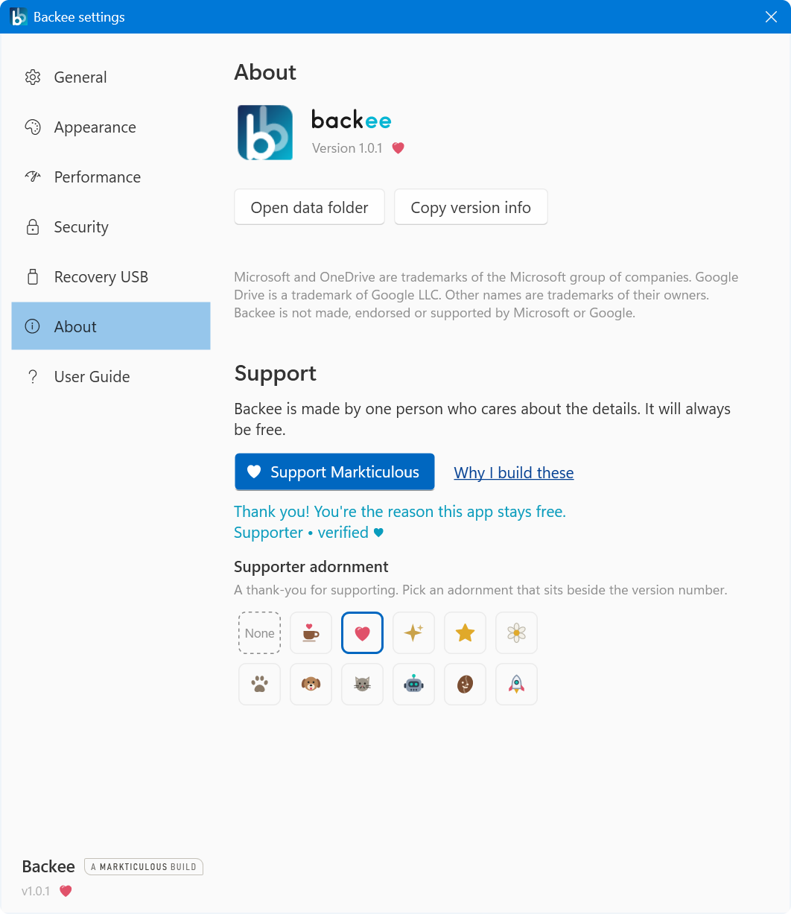
Backee is made by one person and is free. It has no ads and no tracking. It never sends anything about you anywhere. If it gives you peace of mind, you can help keep it going with a coffee on Ko-fi.
You will always find the support button under Settings → About, next to a link that explains why these apps are made. After Backee has been useful for a while, an extra item also appears in the tray menu.
Backee may ask you for support once in a while, after it has made many backups or after you have restored files. It asks at most a few times, a long time apart, and never while a backup or restore is running. If you ask it not to ask again, that is final. It will never ask again, and the tray item goes away.
If you have supported Markticulous, you can tell Backee on the About page. You then get a small thank-you picture of your choice, called an adornment, shown beside the version number.
When you tell Backee you have supported, it asks for the email you used on Ko-fi. Backee sends only a scrambled version of that email (a hash) to markticulous.com to check it, and only when you click Check. Nothing else is sent. If you would rather not, click Skip the check: Backee takes your word for it, as it always has.
14Installing and updating
Installing
- Download Backee from the Backee page. The file is named like Backee-0.5.0-x64.msi.
- Double-click it. If Windows shows “Windows protected your PC”, click More info, then Run anyway. This appears because Backee is new and not yet signed with a publisher certificate.
- If double-clicking does nothing, Windows has blocked the downloaded file. Right-click it → Properties, tick Unblock at the bottom of the General tab, click OK, then double-click it again.
- On the first page, leave Create a desktop shortcut ticked if you want one, accept the licence and click Install. Windows asks for an administrator's permission. Choose Yes.
Backee installs for everyone on the PC, in Program Files\Backee, with the Backee service that runs your backups even when nobody is signed in. Everything it needs comes with it, so there is nothing else to install. You will find Backee in the Start menu, and on your desktop if you kept the shortcut.
Updates
Backee checks for a new version once a day. With Update automatically on, it installs the update when no backup or restore is running and no Backee window is open, then starts again. Your backups, jobs and settings are kept, and your choice about the desktop shortcut stays as it was. To check yourself, or to install an update at once, go to Settings → General → Updates.
Uninstalling
Open Windows Settings → Apps → Installed apps, find Backee and choose Uninstall. Your backups stay where they are, and the jobs, passwords and logs stay in %ProgramData%\Backee in case you reinstall. Delete that folder if you want them gone.
15If something goes wrong
- “Backee cannot reach its service”, or a strip saying the service is not running
- If the banner says Backee is starting with Windows instead, wait a moment: the service is still starting. Backups will not happen until the service runs. Restart the PC, or open the Windows Services list and start the service named BackeeService. The tray icon is amber while it is down.
- A backup failed
- Open the ⋯ menu on its tile and choose Show details. In Activity, the notes under the facts say why. A common cause is a drive that is full or a folder that was moved or deleted.
- “The bucket refused Backee's access key”
- The storage service did not accept the key, or the key is not allowed to read, write and delete in that bucket. Backee does not keep trying, because trying again cannot help. Check the key and its permissions with your provider. Then click ⋯ on the tile, choose Edit…, type the secret key again and save. Run the backup afterwards.
- “Backee needs you to sign in to OneDrive again”
- The saved sign-in no longer works, usually because it expired or was revoked. Backee does not keep trying, because trying again cannot help. Choose Sign in again on the Restore page, or Sign in again… in the backup’s ⋯ menu on Home, and sign in with the same account. Run the backup afterwards.
- “Backee needs you to sign in to Google Drive again”
- The saved sign-in no longer works, usually because you removed Backee’s access in your Google account, or the sign-in was not used for six months. Backee does not keep trying, because trying again cannot help. Choose Sign in again on the Restore page, or Sign in again… in the backup’s ⋯ menu on Home, and sign in with the same account. Run the backup afterwards.
- “The Backee folder in your Google Drive is missing”
- The folder was deleted, moved or put in the bin. Look in the bin of your Google Drive and restore the
Backeefolder to My Drive. If it is gone for good, the backups in it are gone too; create a new backup to start again. - “Your organisation's OneDrive does not allow Backee's app folder”
- Some work or school Microsoft 365 plans turn off the app folder Backee needs. Personal Microsoft accounts are what Backee supports; use one instead, or choose a synced OneDrive folder as the destination (see Making a backup, Step 2: Where).
- “The backup folder … is missing”
- The folder this backup saves to was renamed, moved or deleted after it had stored at least one version. Backee does not start a new, empty backup in its place, because that would hide your earlier versions and store everything again. Put the folder back under the name the message gives (the line under Name in Edit shows it too), and the next run carries on with every version kept. If the folder is gone for good, delete the backup and create a new one.
- A tile says Waiting
- The tile gives the reason. A USB drive that is not plugged in, or a low battery, are the usual ones. It starts by itself when the reason goes away.
- Something was skipped
- The backup shows Warnings. Click the label to open the run in Activity and see which files were skipped. If you understand the warning and accept it, use Mark as reviewed in the tile's ⋯ menu: the tile and the tray icon turn green until the next run with warnings.
- Files are online-only in OneDrive or another cloud folder
- Unless you accepted the online-only files (see Files that are only in OneDrive), the backup shows Warnings. At the start of the notes, Activity says how many files are online-only and lists them. Their content is in the cloud, not on this PC, so Backee cannot read them. In File Explorer, right-click the folder and choose the option that keeps files on this device, such as Always keep on this device. Wait for the files to download, then run the backup again. Files that were backed up while they were on this PC stay in the backup.
- “That password is not right.” or “Too many wrong passwords…”
- When you open an encrypted backup, check the password and type it again. After five wrong tries Backee makes you wait five minutes, and the message says how long. Then try again. Backee cannot read an encrypted backup without its password, and nobody can recover a lost one.
- “This backup was made by a newer Backee…”
- The backup was written by a newer version of Backee than the one on this PC. Update Backee (see Installing and updating), then open it again.
- “There is no Backee backup in this folder.”
- The folder you chose with Browse… does not hold a Backee backup. Choose the folder Backee made, the one that holds the backup itself, or use On this PC to let Backee search every drive.
- A restore did not work
- Backee names the files it could not restore. Everything else is restored.
- Looking for more detail
- Go to Settings → About and click Open data folder. It opens %ProgramData%\Backee, where the service keeps its information. Only administrators can open its contents. The service also writes what it is doing to log files in the logs folder inside it, one file for each day (service-20261110.log), and keeps the last seven days.
- Asking for help
- Click Copy version info on the About page and paste it into your message. If a backup is involved, send its Copy details text from Activity too.